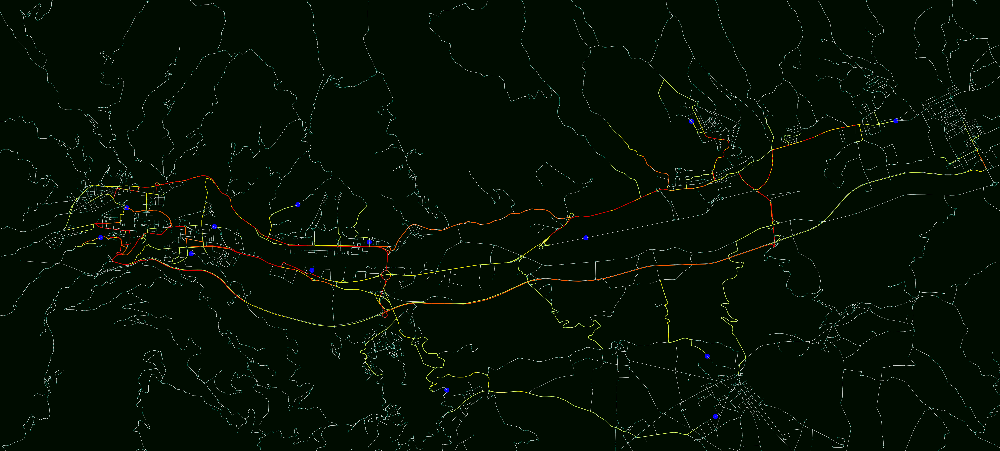
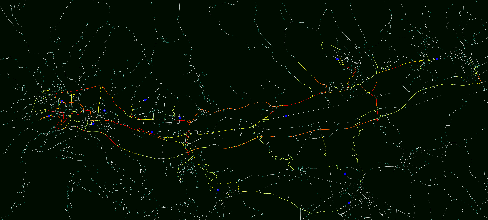

Bio
Born and raised in Ascoli Piceno (IT), I recently earned a Master Degree from the University and Camerino and from Reykjavik University as part of a Double Degree Programme in Computer Science. Passionate about AI, Machine Learning and Deep Learning, I am currently working on the Tangramob project together with my former MSc supervisors and some fellow students.
Audiam quaerendum eu sea, pro omittam definiebas ex. Te est latine definitiones. Quot wisi nulla ex duo. Vis sint solet expetenda ne, his te phaedrum referrentur consectetuer. Id vix fabulas oporteat, ei quo vide phaedrum, vim vivendum maiestatis in.
Timeline
2017 - Now
Research Assistant
at the University of Camerino: advancing and
improving Tangramob
(AB Simulation, Reinforcement Learning)
2014 - 2016
MSc in Computer Science
Double Degree Program: University of Camerino and Reykjavik University
2011 - 2014
BSc in Computer Science
University of Camerino
Projects
Estimating the effects of introducing a range of smart mobility solutions within an urban area is a crucial concern in urban planning. Local public authorities and mobility service providers currently base their mobility decisions on common heuristics and best practices. However, these approaches struggle to generalize any urban context, thus it follows that their effectiveness and applicability are often compromised. In particular, these approaches might end up being risky for decision makers, since the resulting mobility initiatives may be unaccepted by the population and this would translate in a considerable waste of resources.
Tangramob is an agent-based simulation framework that allows users to assess the impacts, in terms of people adoption and system performance, of the introduction of new smart mobility services within an urban area of interest. Starting from the urban road network of the geographical area under study, a sample population and a smart mobility initiative (a list of mobility services together with their definition), Tangramob simulates how urban traffic is expected to evolve as citizens start experiencing the newly offered traveling solutions.


 

Tangramob relies on an Agent-Based Model (ABM) in which every person in the sample population is modeled as an autonomous reasoning agent. During the simulation, each agent will try to understand how to better move within the city in order to satisfy its daily mobility needs in the best way. To do this, agents are given the ability to use all the mobility services available to perform their travels, and to record their traveling experience in a personal (and persistent) data structure (a Knowledge Base). Following a Reinforcement Learning (RL) strategy, a Tangramob simulation is organized as a series of iterations, so that a single day is simulated multiple times: this approach allows citizens to accumulate experience so as to come up with better mobility decisions. At the end of a simulation, we will be able to understand how the mobility initiative is accepted by the population and how it affects both citizens and urban system.
This open-source computational tool can thus be thought of as a Decision Support System (DSS) for Smart Mobility, since it is meant to support urban planner and transport companies in understanding if the simulated results of a mobility initiative are expected to be in line with their objectives and plans. The peculiarities of this tool are: the adaptability to different geographical contexts; the support of multimodal trips and mobility services; the ability to reproduce real-life scenarios. Technically speaking, Tangramob is developed on MATSim, an open-source framework to implement large-scale agent-based transport simulations.
If you want to learn more on this project, plaese visit the Tangramob website, or take a look at these slides.
In Social Network Analysis (SNA), the field of information diffusion has recently gained interest since it aims to understand how people react to new incoming information within an influential environment. Predicting how a piece of news can spread over a social network is quite challenging since it depends on many factors like its content, the users elected to start its spread, the topology of the network, the interest rates of the exposed users along with their social network behavior as well. However, most traditional models of diffusion are mainly concerned with the social network topology when identifying the causes of word of mouth, thereby disregarding that users behave differently during their social network experience; e.g. a person who is continuously sharing posts on his wall has a greater spreading effect than a reserved user.
jSeagull, a Java Simulation Engine for Agent-Graph Understanding in Local Lattices, is a new simulation model for information diffusion based on users' social network behaviors for both news exposure and sharing attitude. Given a piece of news (e.g. a post or a tweet) and a social network, the phenomenon of word of mouth is modeled in terms of an epidemiology problem as follows: susceptible agents are impersonated by social network users whereas a piece of news to be spread within the social network plays the role of the epidemics. More precisely, a user is considered infected if he/she believes on the piece of news once he/she receives it. Being able to predict such spread is not an easy task since we are dealing with humans characters, but an acceptable accuracy can be reached if user personal data are avaialable.


On a technical viewpoint, jSeagull requires a social network (a directed graph where nodes represent users and edges denote their friendship or follow relationship) and a file describing the personal data and the iterests of each user. Examples of these files used in jSeagull can be found on the SNAP website. Next, the tool will guide you through the procedure of news/post design, in order to create the specific content for which we want to measure its spread within the social network under study. During this procedure, it is possible to write some text, add hashtags and tag some social network users, like in common social networks. Once the post is created, jSeagull applies a coloring scheme to the nodes of the social network graph in such a way to emphasize the interest rates of the users for that piece of news. This allows the observer to iterate through the post creation step until he/she finds an impactful piece of news. Finally, the observer has just to select a set of initial spreaders, i.e. those social network users who are expected to initiate and trigger the spread of the previosuly designed piece of news. The simulation is then ready to start: during this process is quite compelling to observe how the "epidemics" propagates among users as they get in touch with the piece of news. Unlike other existent approaches, it is worth remarking that the actual news spread of the piece of news depends on users' interests and sharing behaviors, as well as the affinity and strenght of their friendship ties.
The availability of Natural Language Processing (NLP) tools and resources, together with the integration of some artificial intelligence techniques, allowed the advancement of traditional Computer-Assisted Language Learning (CALL) systems. This emergent field aims at developing learning platform capable of analyzing language automatically, providing learners with individualized feedback on his own mistakes. However, the state of the art of ICALL systems does not include any actual implementation for the specific case of the Italian language.
To fill this gap, ICALL-IT is a new intelligent computer-assisted language learning platform for the Italian language. First, we collected all the publicly available natural language tools for the Italian in order to consider their adoption within our platform. Then, we designed five different exercises according to what is considered tougher for an intermediate Italian language learner. we implemented an ICALL system providing learners with five exercises, some of which have different variants. Each exercise is aimed at improving a specific set of the user's skills and it has one or more learning outcomes. During this step, we identified 5 different exercises from a set of learning outcomes, defined according to the most difficult issues for an Italian language learner.


- Exercise 1:
- Exercise 2: